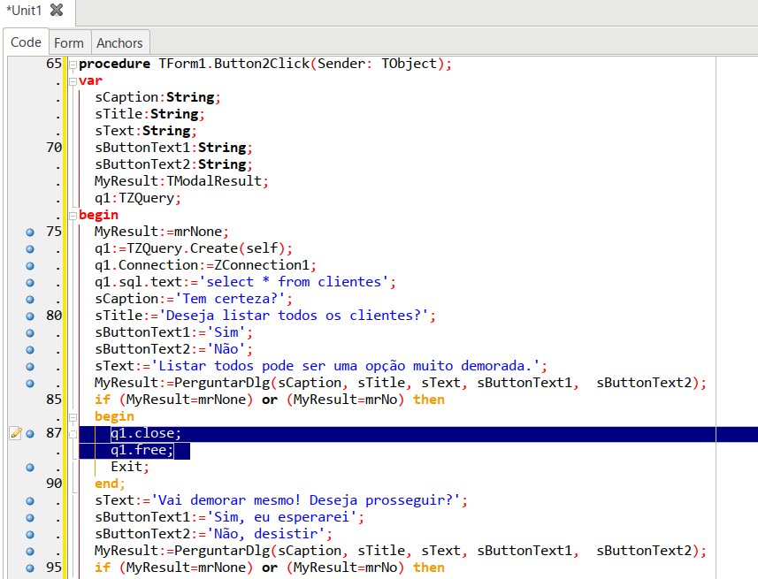

O que é Refatoração?
Refatorar significa melhorar a estrutura interna de um código sem alterar seu comportamento externo. Um dos aspectos mais valorizados em um software profissional é a ausência de redundâncias. Se há código repetido, há uma oportunidade de refatoração.
O objetivo é quebrar trechos grandes em pedaços menores e reutilizáveis, como procedimentos, funções ou, no caso do Pascal, subprocedimentos locais.
Exemplo de Código Redundante
Imagine o código de um botão que simplesmente exibe uma caixa de diálogo personalizada:
var ACaption, ATitle, AText, AButtonText1, AButtonText2: String; AResult: TModalResult;
begin
AResult := mrNone;
ACaption := 'Ser ou não ser';
ATitle := 'Eis a questão:';
// ... configuração do TTaskDialog ...
end;1. Refatorando para um Método ou Função
Se você precisar usar esse mesmo diálogo em outro botão, a tendência é copiar e colar (Ctrl+C / Ctrl+V). Isso cria um problema de manutenção. Para resolver isso usando a IDE:
- Marque o trecho de código repetido no editor.
- Vá ao menu: Source | Refactoring | Extract Procedure...
- Escolha o nome do novo método (ex:
PerguntarDlg) e o escopo (Private ou Public).
A IDE criará automaticamente a assinatura do método e substituirá o código original pela chamada da nova função.
2. Refatorando para Subprocedimento Local
Às vezes, a repetição acontece dentro de uma mesma função (ex: liberar memória de objetos locais). Para esses casos, podemos usar o Sub Procedure.
Ao selecionar a opção Sub Procedure na extração, a IDE cria um procedimento dentro do bloco procedure atual, permitindo que objetos locais (como queries) sejam manipulados sem expor esse código ao resto da classe.
Conclusão
Manter um código limpo (Clean Code) é um investimento que se paga na primeira manutenção que você precisar fazer. O uso das ferramentas de refatoração do Lazarus economiza tempo e evita erros manuais de digitação ao extrair lógica para novos métodos.
Sempre que finalizar uma funcionalidade, reserve alguns minutos para revisar o código e aplicar essas técnicas. Seu "eu do futuro" agradecerá pela legibilidade e facilidade de depuração.